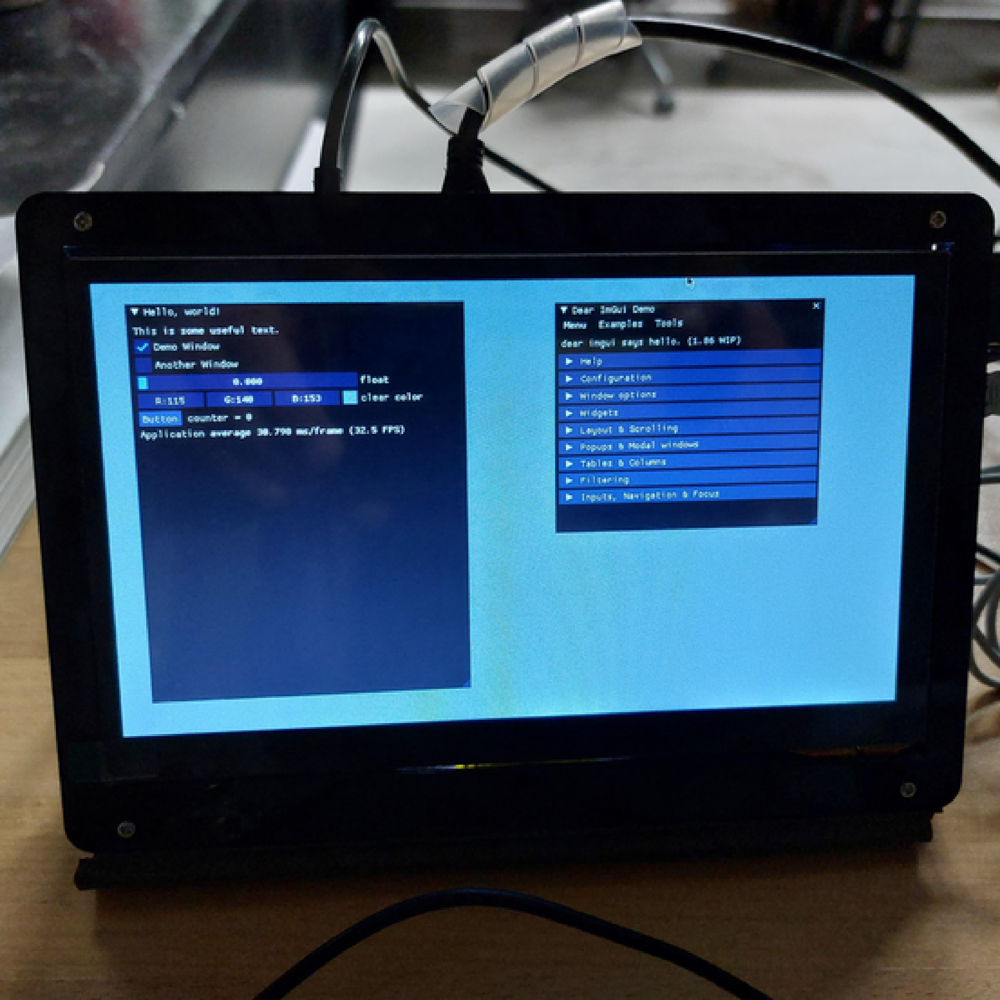

last projects
sinfo - a compact graphical system performance monitor written in c++
poky linux with a compact performance monitor on Raspberry π
introduction to linux
a perl web catalogue with docker-compose
mode view back/front-office controllers written in php
javascript inforouleau
about me
about the company
powered by LaTeX
this document in pdf format